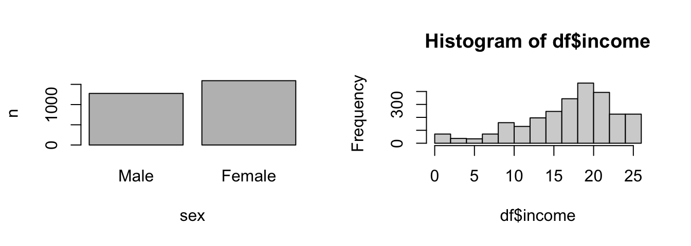
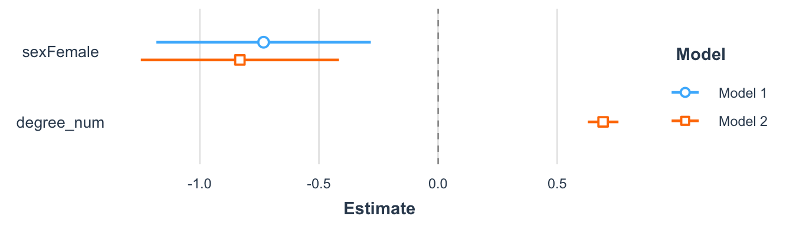
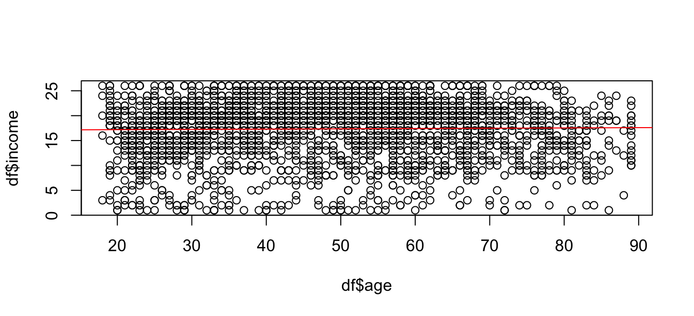
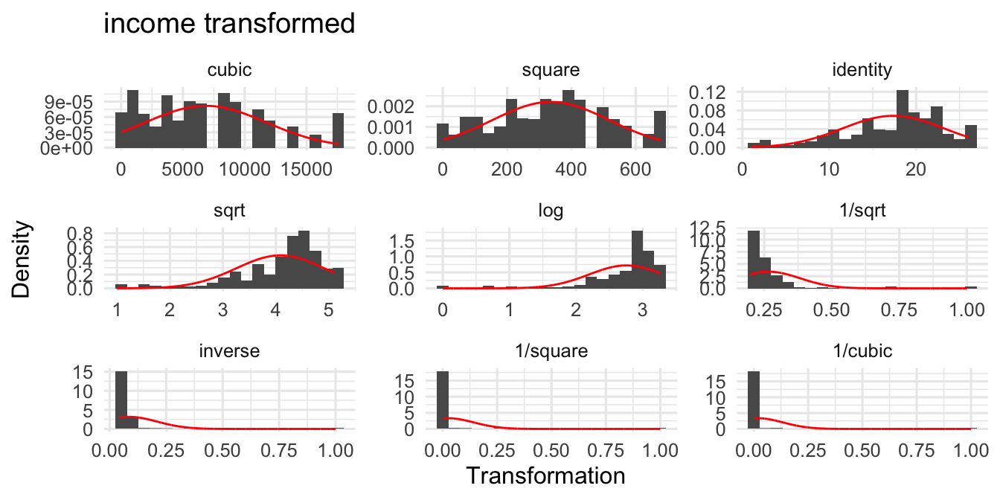
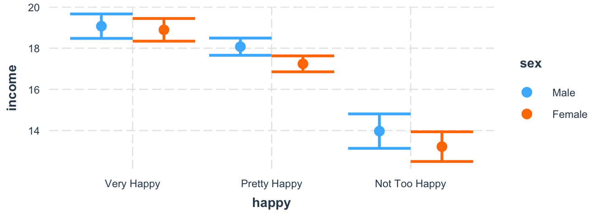
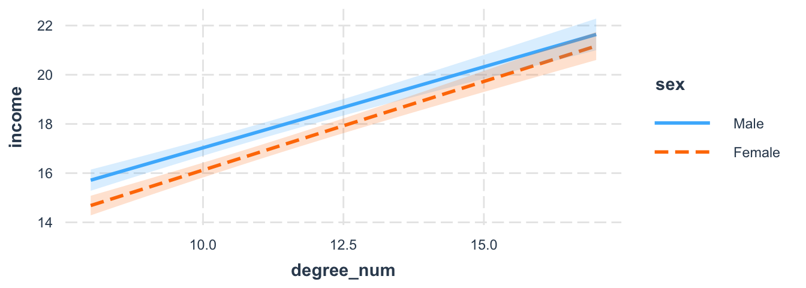
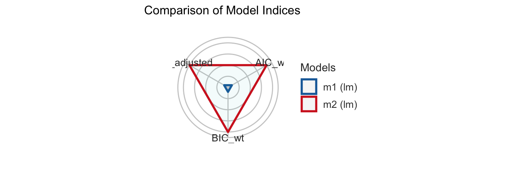
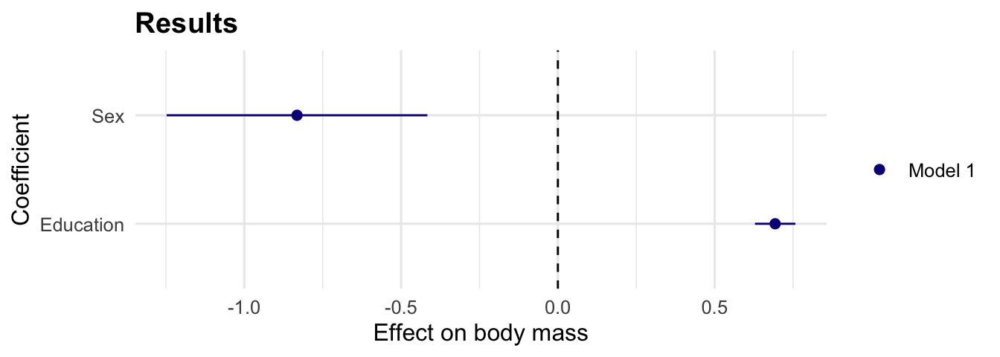

# Select variables
library(dplyr)
library(PracticeR)
varlist <- c("income", "age", "sex", "happy", "degree")
# And mutate to create a numerical variable for degree
df <- PracticeR::gss2016 |>
select(all_of(varlist)) |>
mutate(degree_num = case_when(
degree == "Lt High School" ~ 8,
degree == "High School" ~ 9,
degree == "Junior College" ~ 12,
degree == "Bachelor" ~ 15,
degree == "Graduate" ~ 17,
degree == NA ~ NA
))5 Analyze data
Welcome to the tutorial six of the Practice R book (Treischl 2023). Practice R is a text book for the social sciences which provides several tutorials supporting students to learn R. Feel free to inspect the tutorials even if you are not familiar with the book, but keep in mind these tutorials are supposed to complement the Practice R book.
We explored how a linear regression analysis works in Chapter 6. I introduced the corresponding lm() function and many packages that help us to develop a linear regression model. This tutorial summarizes the discussed steps and asks you to apply them by running an example analysis. We examine whether life satisfaction, participant’s sex, or age has an effect on people’s income.
In order to focus on data analysis steps, I have already prepared the gss2016 data. Keep its limitations in mind. It is a cross-sectional survey and some of the variables such as income and happy are not a measured on a numerical scale, as the raw data shows. The same applies to degree, the educational background is measured as a categorical variable, which is why I transformed it (degree_num). We will nonetheless use the gss2016 data to summarize how a linear regression analysis is implemented in R and which packages help us to develop a model.
Furthermore, we implicitly assume that an independent variable x influences a dependent variable y, although the research design and the data may not allow such a wide-ranging assumptions. For this reason, Chapter 6 introduced the main idea of causality and elaborated which variables we need to control in a linear regression analysis. The correlation vs. causation comic strip underlines this point once more.

This tutorial focus on the coding skills to run a linear regression and not on the underlying causal structure between the examined variables. First, we repeat the basics to estimate a linear regression analysis. Next, I ask you to develop your model by examining non-linear effects, interaction effects, and by comparing the performance of such adjustment steps. Finally, I briefly summarize several package that help us with the model specification and assumptions.
# Setup of tutorial 6
library(effectsize)
library(estimatr)
library(dotwhisker)
library(huxtable)
library(interactions)
library(jtools)
library(lmtest)
library(performance)5.1 Estimate a linear regression analysis
I used data for teaching purposes to introduce a linear regression analysis in Practice R. This made it possible to focus on the code and its implementation; we did not explore the data, there was no need to clean the data, prepare variables, or deal with missing values. Such steps are necessary to analyze data and the process is not linear: We start to explore the data, we prepare variables, and run a first analysis. However, often we need to circle back to improve the model due to different reasons (e.g. to include control variables, check on implausible values, etc.). Thus, the first estimation results are preliminary and may substantially change during the course of the model development.
So, we need to explore the variable first. Suppose we examine the gender wage gap: how large is the effect of sex on income? Explore the distribution of each variable. This gives us an overview how many men and women we observe and whether we may transform the outcome variable in a later step. I already adjusted the graphical parameters (par) to put the two graphs next to each other (mfrow creates one row and two columns). Create a bar plot and a histogram to examine the variables.
# Count sex
count_sex <- dplyr::count(df, sex)
# Plot two graphs
par(mfrow = c(1, 2))
barplot(n ~ sex, data = count_sex)
hist(df$income)
We may run a first analysis after we have explored the data, cleaned, and prepared the variables. Use the lm() function to estimate a linear regression analysis. The function needs the data and a formula (y ~ x1) to estimate the effect of sex on income.
# The lm function
lm(income ~ sex, data = df)#>
#> Call:
#> lm(formula = income ~ sex, data = df)
#>
#> Coefficients:
#> (Intercept) sexFemale
#> 17.7642 -0.7323Since income is not measured on a numeric scale, this coefficient is hard to interpret, but in accordance with theoretical expectations, females have a lower income. The summary() function helps us with the interpretation of the model. It returns the estimated coefficients, R², and further information about the model. In addition, add a second variable with a plus sign (+) and examine whether the educational background (degree_num) mediates the effect.
# The summary function
summary(lm(income ~ sex + degree_num, data = df))#>
#> Call:
#> lm(formula = income ~ sex + degree_num, data = df)
#>
#> Residuals:
#> Min 1Q Median 3Q Max
#> -20.8416 -2.7738 0.9904 3.7014 11.2262
#>
#> Coefficients:
#> Estimate Std. Error t value Pr(>|t|)
#> (Intercept) 10.06283 0.39773 25.300 < 2e-16 ***
#> sexFemale -0.83192 0.21199 -3.924 8.92e-05 ***
#> degree_num 0.69287 0.03285 21.090 < 2e-16 ***
#> ---
#> Signif. codes: 0 '***' 0.001 '**' 0.01 '*' 0.05 '.' 0.1 ' ' 1
#>
#> Residual standard error: 5.375 on 2590 degrees of freedom
#> (274 observations deleted due to missingness)
#> Multiple R-squared: 0.15, Adjusted R-squared: 0.1493
#> F-statistic: 228.5 on 2 and 2590 DF, p-value: < 2.2e-16Apparently, the wage gap can’t be explained by the educational background of the participants since sex has a significant effect. Use the predict() function to apply the model. I have already saved the model and I created a new data frame with example values. Apply the model and predict how income changes if degree_num increases; or examine how predicted values differ between male and female participants. Predicting values give you a better intuition about the model.
# The model
model <- lm(income ~ sex + degree_num, data = df)
# Generate example data
new_data <- data.frame(
sex = c("Female", "Male"),
degree_num = c(10, 10)
)
# Apply the model with predict(model, data)
predict(model, new_data)#> 1 2
#> 16.15957 16.99149Finally, keep in mind that the effectsize package helps us to interpret model parameters such as R² (Ben-Shachar et al. 2022). I have saved the summary as sum_model. Can you extract R² (r.squared) from the latter and interpret it with interpret_r2() function. As default, it uses the Cohen’s rules to interpret the effect size.
# Assign summary of the model
sum_model <- summary(model)
# Interpret R2
effectsize::interpret_r2(sum_model$r.squared, rules = "cohen1988")#> [1] "moderate"
#> (Rules: cohen1988)5.2 Develop the model
As outlined in Chapter 6, we develop models step by step. We start simple with a bivariate model. We include control variables to inspect how our estimation results change; we examine whether interaction effects mediate the effect; and to which extent an effect is linear. This is not an all-encompassing list, but developing a model step by step implies that we need to compare models to see how the estimation results change between steps. For this purpose we need tables and visualization to compare the estimated models.
We already started to develop a model as we included a second independent variable, but our approach made it hard to comprehend how the estimations results change if we add (drop) a variable. Use the huxreg() function from the huxtable package to compare models (Hugh-Jones 2022).
# Models
m1 <- lm(income ~ sex, data = df)
m2 <- lm(income ~ sex + degree_num, data = df)
# Develop models step by step
huxtable::huxreg(m1, m2)| (1) | (2) | |
|---|---|---|
| (Intercept) | 17.764 *** | 10.063 *** |
| (0.169) | (0.398) | |
| sexFemale | -0.732 ** | -0.832 *** |
| (0.230) | (0.212) | |
| degree_num | 0.693 *** | |
| (0.033) | ||
| N | 2596 | 2593 |
| R2 | 0.004 | 0.150 |
| logLik | -8256.549 | -8038.689 |
| AIC | 16519.099 | 16085.377 |
| *** p < 0.001; ** p < 0.01; * p < 0.05. | ||
In addition, use dot-and-whisker plots to compare model graphically. The plot_summs() function from the jtools package only needs the model names (Long 2022).
# jtools returns a dot-and-whisker plot
jtools::plot_summs(m1, m2)
Now that we have established the framework to develop models, let us inspect how we can examine non-linear effects, transform variables, and include interaction effects. Finally we need to check how model changes affect the performance of the model.
We have already applied to lm() function when we first created a scatter plot. Since we assume a linear relationship, we should start to examine the effect with a scatter plot in the case of a numerical independent variable. As outlined in Chapter 3, we may insert a regression line with abline and the lm() function. For example, consider the scatter plot for the effect of age on income.
# Create a scatter plot
plot(y = df$income, x = df$age)
abline(lm(income ~ age, data = df), col = "red")
It seems though that both variables are not or only weakly related. Does this mean that we are supposed to stop here since there is no (large) effect? A linear regression assumes a linear effect, but the effect of age on income might not be linear. For example, create a squared age variable and including it in second model to examine if age has a non-linear effect. By including a squared variable for age, we can estimate if the effect increases (decreases) for older people.
# Make a squared age variable
df$age_sqr <- df$age^2
# Compare models
m1 <- lm(income ~ age, data = df)
m2 <- lm(income ~ age + age_sqr, data = df)
huxtable::huxreg(m1, m2)| (1) | (2) | |
|---|---|---|
| (Intercept) | 17.066 *** | 10.421 *** |
| (0.343) | (0.880) | |
| age | 0.006 | 0.305 *** |
| (0.007) | (0.037) | |
| age_sqr | -0.003 *** | |
| (0.000) | ||
| N | 2589 | 2589 |
| R2 | 0.000 | 0.026 |
| logLik | -8238.575 | -8205.475 |
| AIC | 16483.151 | 16418.951 |
| *** p < 0.001; ** p < 0.01; * p < 0.05. | ||
We may transform the outcome variable to increase the model fit as well. In the case of income, we often observe many people with little or average income while the amount of people with of a very high income is low. In such a case a logarithm of the income may help to increase the model fit. Keep in mind that the interpretation of the coefficient will change if we transform the variables. Regardless of the interpretation, the transformer() function shows what the distribution of a numerical variable would look like (e.g. log) if you transform it.
# Transform a numerical variable
PracticeR::transformer(df$income)
Next, we examine interaction effects: I estimated a model with an interaction effect between happy and sex. Certainly, I only included it to repeat how this works, but it implies that the effect of happiness on income is moderated by sex. Regardless of my ad-hoc hypothesis, visualize the effect with cat_plot() function from the interactions package (Long 2021); it needs the model, the name of the predictor (pred) and the moderator variable (modx). As the plots shows, there is no significant interaction effect.
# Interaction of two categorical variables
library(interactions)
m3 <- lm(income ~ happy * sex, data = df)
# cat_plot for categorical predictors
cat_plot(m3, pred = happy, modx = sex)
Suppose we believe there is an interaction between sex and education. We may expect that male participants gain much more advantages from education than female participants. Use the interact_plot() function with the predictor variable (pred) and the moderator (modx) variable. The interval option shows the confidence interval and we can see the overlap.
# Interaction model
m3 <- lm(income ~ sex * degree_num, data = df)
# Interaction between sex*degree_num
interact_plot(m3,
pred = degree_num, modx = sex,
interval = TRUE, plot.points = FALSE
)
Finally, keep the performance package in mind when developing models (Lüdecke et al. 2022). Check how the performance changes if you insert a non-linear parameter, include interaction terms or if you compare different model specifications. The compare_performance() function returns several performance indicators and it even creates a radar plot if we assign and plot the results.
# Compare performance
library(performance)
performance_models <- compare_performance(m1, m2,
metrics = c("AIC", "BIC", "R2_adj")
)
# Compare performance
performance_models
#> Comparison of Model Performance Indices
#>Name | Model | AIC (weights) | BIC (weights) | R2 (adj.)
#>-------------------------------------------------------------
#>m1 | lm | 16483.2 (<.001) | 16500.7 (<.001) | -8.117e-05
#>m2 | lm | 16419.0 (>.999) | 16442.4 (>.999) | 0.025# Plot results
plot(performance_models)
5.3 Improve the model
There are more steps to develop and improve the model. Up to this point we developed the model from a theoretical point of view: we checked if variables interact with each other or in case of a non-linear effect. There is still much room for improvement after we worked off theoretical points. At least we should be aware about the assumptions of a linear regression analysis and the packages that can help us to address such concerns. So, what shall we do if we finalized the first model(s)?
# Final model(s)
m_all <- lm(income ~ sex + degree_num, data = df)I introduce the performance package because it gives you a quick overview about potential violations. First, the check_model() returns an overview with several plots to check the model assumptions.
# Get a quick overview
check_model(m_all)Second, the package has several check_* functions to examine assumptions individually. For example, what about multicollinearity and heteroscedasticity?
# multicollinearity
check_collinearity(m_all)
#> Check for Multicollinearity
#> Low Correlation
#> Term VIF VIF 95% CI Increased SE Tolerance
#> sex 1.00 [1.00, Inf] 1.00 1.00
#> degree_num 1.00 [1.00, Inf] 1.00 1.00
#>
#> Tolerance 95% CI
#> [0.00, 1.00]
#> [0.00, 1.00]# check_heteroscedasticity
check_heteroscedasticity(m_all)#> Warning: Heteroscedasticity (non-constant error variance) detected (p < .001).The last function runs a statistical test to check on the assumptions; in the case of heteroscedasticity we can apply the Breusch & Pagan (1979) test (bptest), which runs in the background. The lmtest package gives you access to such statistical tests (Hothorn et al. 2022).
# Breusch & Pagan test (1979)
lmtest::bptest(m1)#>
#> studentized Breusch-Pagan test
#>
#> data: m1
#> BP = 3.2195, df = 1, p-value = 0.07277The error of our model is heteroscedastic and the estimatr package runs a regression with (cluster) robust standard errors to address this point (Blair et al. 2022). Run a regression with the lm_robust() function and adjust the type of standard errors with the se_type option.
# Robust standard errors
library(estimatr)
robust_model <- lm_robust(income ~ age,
data = df,
se_type = "stata"
)
summary(robust_model)#>
#> Call:
#> lm_robust(formula = income ~ age, data = df, se_type = "stata")
#>
#> Standard error type: HC1
#>
#> Coefficients:
#> Estimate Std. Error t value Pr(>|t|) CI Lower CI Upper DF
#> (Intercept) 17.066368 0.348788 48.9305 0.0000 16.382436 17.75030 2587
#> age 0.005891 0.006638 0.8875 0.3749 -0.007125 0.01891 2587
#>
#> Multiple R-squared: 0.0003053 , Adjusted R-squared: -8.117e-05
#> F-statistic: 0.7876 on 1 and 2587 DF, p-value: 0.3749Finally, one last word about the visualization of regression results. The jtools package provides convenient solutions to create dot-and-whisker plots; and the dotwhisker package lets us customize the graph (Solt and Hu 2021). For this purpose I introduce the package, but this does not mean that we have to build a long and complicated code from the ground up each time we need an individual dot-and-whisker plot. In the next chapter we learn more about ggplot2 which will boost your visualization skills and in a later step we will create functions to create plots efficiently (Wickham et al. 2022).
The same applies to the dotwhisker package. Once you have built a graph, you can build your own function to create such plots. Don’t let complicated code scare you off, we’ll soon work on strategies how to create plots without the trouble of memorizing complex code. For example, I created a function called visualize_model() which rebuilds the complicated code to create a dot-and-whisker plot from Chapter 6. However, it only needs the models and the names for each predictor to create the plot.
# visualize_model() runs dotwhisker in the background
visualize_model(m_all, p1 = "Sex", p2 = "Education")
5.4 Summary
Keep the following R functions and packages in mind:
Fitting linear models (
lm)Model predictions (
predict)Interpret coefficient of determination (
effectsize::interpret_r2)Reorder levels of factor (
relevel)Create a huxtable to display model output (
huxtable::huxreg)Plot regression summaries (
jtools::plot_summs)Plot interaction effects in regression models (e.g.,
interactions::interact_plot)The
performancepackage and its functions to examine the performance of a model.- Compute the model’s R2 (
r2) - Compare performance of different models (
compare_performance) - Visual check of model assumptions (e.g.,
check_model, check_outliers, check_heteroscedasticity)
- Compute the model’s R2 (
Transform a numerical input (
PracticeR::transformer)Export regression summaries to tables (
jtools::export_summs)OLS with robust standard errors (
estimatr::lm_robust)Create fine tuned dot-and-whisker plots API with the
dotwhiskerpackage